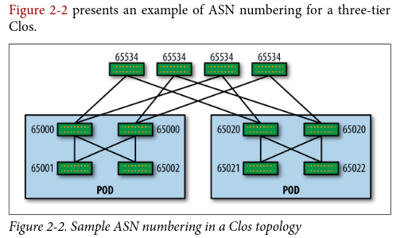
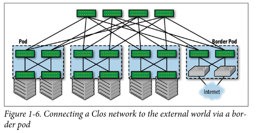

さくらインターネット Advent Calendar 2021 25日目の記事になります。
JANOG49 Meeting への登壇が決まり、準備を進めています。 Clos Network Topology を運用するために、どのような取り組みをしていますか というタイトルにて、 Clos Network Topology を題材に、運用している皆さんは、学習・教育という切り口にて、どのような取り組みをしているのかを議論したいという発表になっています。
JANOG49 Meeting のニュースレターである 最強プログラムの紹介 に、私の発表についての言及があり、震えています。
今日は、時間の都合にて発表の中には含めることができなかった、 学習のために実装した Clos Network Topology の話を Advent Calender の力を借りて書いていきます。
Clos Network Topology について、何故このようなことをやろうと思ったのか、 学習のために実装した Clos Network Topology にについての順番で書いていきます。 「何故このようなことをやろうと思ったのか」のボリュームが結構あるため、 実装した Clos Network Topology の内容だけを読みたい方は、「実装のモチベーション」くらいから読み進めてください。
Clos Network Topology
私は、 BGP を利用した、スケールアウト可能なデータセンターネットワークと理解しています。 IP CLOS, IP Fabric, Clos Network など様々な呼び方をされているように見えるため、 何と呼んだら、これを他の人に伝えられるのかがよくわかっていません。 どなたか詳しい方がいましたら、教えていもらえるとうれしいです。
今回は、 RFC7938 に出てくる Clos Network Topology という呼び方で話を進めていきます。
https://tools.ietf.org/html/rfc7938
学習のモチベーション
いくつもの条件が重なり、学習のための Clos Netowork Topology 実装に繋がっているというところを書いていきます。
サービスを構成する要素の一部を止めてもサービスは止まらないインフラ作りに興味がある
インフラエンジニアとして、サービスを支えている様々なシステムを目にしたり、その運用に携わってきました。 サーバーの uptime が 6500日オーバーで、これが停止すると4つのサービスが提供できなくなる、 バッチが5分おきに起動していて、サーバーを再起動する時間が無いといったようなシステムを目にし、その運用に携わってきました。
サーバーを1台用意するのは簡単だけれども、 そこにどう運用していくのかという視点が欠けていると、 止められないサーバーという形でサービスの運用に跳ね返ってきて、 心身ともに疲弊していくことを身を持って学びました。 これらの経験から「サーバーを止めてもサービスは稼動する」 「サーバーを止めてもサービスへの影響範囲は限定的」なインフラを作るということが、 自分がインフラエンジニアでご飯を食べていく意味であると強く決意し、インフラ作りに携わっています。
まだ前職である2018年11月2日に Cybouz さんの公開している記事を目にして、 サービスを構成する要素の一部を止めてもサービは止まならいアーキテクチャを ベンダーに依存しないプロトコルで実装できるのかというところに感動を覚え、興味を持ちました。
記事を読んだ日は、妻と結婚する前の両家顔合せのため神戸におり、 観光で妻と一緒に 舞子海上プロムナード に向かう電車の中で、 この記事を iPad で目にして、最寄り駅で下りそこねるところだったことは、今でも鮮明に思い出すことができます。
転職先に Clos Network Topology があった
前職にて思うところがあり、2018年10月から転職活動をはじめ、 2018年12月に「さくらインターネット」から内定をいただき、 2019年3月から「さくらの専用サーバ PHY」の開発にジョインしました。 ( Cybouz さんも受けましたが、自分の力が及ばず見送りとなりました。 )
自身の役割である監視の基盤を整備しているなかで、 チームメンバーから Spine, Leaf という言葉が出てきており、 もしかして Clos Network Topology が動いているのかと内部の資料を漁ってみると動いていました。
以前から興味があり、実務とも結び付くので学習してみようと思いました。
一人運用の現状を打破していきたい
「さくらの専用サーバ」のインフラチームという単位で、 チームが構成されており、私はここに所属しています。 さくらインターネット Advent Calendar 2021 でのアウトプットの通り、 私は、「さくらの専用サーバ PHY」にて、コンテナによるアプリケーション実行基盤、 メトリクスス管理・監視基盤、ログ管理・監視の基盤など、 サービスを支えるシステム基盤の整備をリードするような立ち位置となっています。
「さくらの専用サーバ PHY」にて、 Clos Network Topology を実装しています。 「さくらの専用サーバ PHY」にて実装されている Clos Network Topology は、我々インフラチームの管理下にあります。 我々のチームの管理下にある Clos Network Topology は、1人運用の状態となっていす。 上記の通り、私は普段、ネットワークに携わるような業務ではありませんが、 健全とは言い難い Clos Network Topology の運用体制を打破していきたいなと思いました。
実装のモチベーション
ググって出てくる情報は、 ルーティングソフトウェア数台で試してみた、 ベンダーの製品紹介という印象を受けました。
学習用途であれば、ベンダーの製品を使わなくても、 ルーティングソフトウェアを使えば似たようなことはできるだろうと思いました。 数台で試すは、雰囲気を感じにくいなと思ったのと同時に、 自分の中で、全然ワクワクしないなという感情が湧き上がりました。
最低、100台くらいで動かす Clos Network Topology を実装してみたいと思い、 それが無かったので作ってみようと思いました。
参照した情報
BGP in the Data Center という電子書籍を教科書に実装を進めました。
自分がこの書籍を読むよりもずっと前に、 この書籍を読んで、その内容を日本語でアウトプットしている方がネット上にいました。 各章にどんなことが書かれているのかを日本語で知ることができたおかげで、 実装を進めるために注力して読む箇所が明確になり、 BGP in the Data Center を読む時間がだいぶ短縮されました。 ここに一人、とても感謝している人がいることを表明します。
BGP in the Data Centerを読みました (1/6) : Chapter 1 - Introduction to Data Center Networks
利用したもの
Spine, Leaf, ToR, Server 代わりに LXC 、 BGP にはルーティングソフトウェアである BIRD 、 スイッチポート代わりにネットワークブリッジを利用しました。
何故 LXC なのか
Spine, Leaf, ToR, Sever 代わりの Linux サーバーを100台くらい動かす環境が欲しいのですが、 仮想サーバーを100台くらい起動できる、重くて平たいパソコンは、結婚を機に断捨離しました。 LXC コンテナを使えば、 ホストサーバー1台あれば、100台くらいの Linxu サーバーを起動できるため利用を決めました。
また仮想サーバーにした場合、 コンフィグを SSH でコピーするのかなどを考えなければならず面倒臭いです。 Clos Network Topology を学習したいのであって、コンフィグの展開手段を実装したいのではありません。 LXC コンテナで起動した Linux サーバーであれば、 ホストサーバー上のディレクトリでしかなく、ファイルのコピーでコンフィグを展開できて楽であるというのも利用の決め手になっています。
何故 BIRD なのか
ネットワークエンジニアではなく、ネットワーク機器をそんなに触ってきてはいません。 ネットワーク機器っぽい操作感のルーティングソフトウェアに対して、 慣れていて使いやすいという感覚は自分の中にはありませんでした。 ネットワーク機器のコンフィグを読み慣れているという感覚もありませんでした。
普段から戯れているのは Linux で、 経路情報を Linux のルーティングテーブルにインストールするというイメージが、 自分の中では BIRD のコンフィグが一番しやすかったため利用を決めました。
設計
BGP in the Data Center に書いてある通りに設計しています。
BGP ピアリング
- eBGP
- 4-byte ASN
- BGP Unnumbered ( P.50 )
AS 番号の割り当て
ASN Numbering Model ( P.20 ) の通りに構成しています。

サーバーでの BGP
BGP Models for Peering with Servers ( P.75 ) の通りに構成しています。
- ユニークな AS 番号を割り当てる
- サーバーにはデフォルトルートのみを広報する
インターネット抜け
Connectivity to the External World ( P.11 ) の通り、 Border Pod と呼んでいる Leaf スイッチを置き、 そこにルーターを接続し、インターネットに抜けるという構成をとっています。

実装
100台の Clos Network Topology を構築しようとすると、 手動では設定してられないので、下記を全てコード化し、コマンド一発で構築できるようにしました。
パラメータを生成するコマンドを作成し、そのコマンドの出力を別のコマンドに渡し、 Clos Network Topology の構成する LXC コンテナをセットアップしていくという方法をとりました。
- コンテナ生成
- ブリッジネットワーク生成
- BIRD のコンフィグ生成
- 広報する IPv4 アドレス設定
コンテナ生成
コンテナ生成用のパラメータを出力し、別のコマンドから呼び出しコンテナを生成します。
./generator.py --spine
spine0-4200000000
spine1-4200000000
spine2-4200000000
spine3-4200000000
spine4-4200000000
spine5-4200000000
spine6-4200000000
spine7-4200000000
spine8-4200000000
spine9-4200000000
ネットワークブリッジ生成
ネットワークブリッジ生成用のパラメータを出力し、 別コマンドから呼び出し、ネットワークブリッジを生成します。 ネットワークインタフェース名の上限が 16 のため、下記のような出力にしています。
https://git.kernel.org/pub/scm/linux/kernel/git/torvalds/linux.git/tree/include/uapi/linux/if.h#n33
./generator.py --slbrint
s0-l1-1
s0-l2-2
s0-l1-3
s0-l2-4
s0-l1-5
s0-l2-6
s0-l1-7
s0-l2-8
s0-l1-9
s0-l2-10
...
BIRD のコンフィグ
JSON で生成した BIRD 用のコンフィグパラメータを Python のテンプレートエンジンである jinja に食わせて、 BIRD のコンフィグを生成しました。
./generator.py --spinebgp
[
{
"name": "spine0",
"asn": "4200000000",
"ipv4addr": "10.0.0.1",
"leaf": [
{
"spine": "spine0",
"spine_asn": "4200000000",
"leaf": "leaf1",
"leaf_asn": "4200000011",
"bridge_name": "s0-l1-1",
"spine_index": "1",
"leaf_index": "1",
"ipv6addr": "fe80::1:1"
},
...
Border Pod
BGP in the Data Center から 具体的な実装を見付けられなかったので、想像で実装しました。
ルーターとして動かしている Linux サーバーにて iptables を使い IP Masquerade し、 BGP にてデフォルトルートを広報し、 Bordear Leaf, Spine, Leaf, ToR, Server に伝搬させることで、 Clos Network Topology 内に無い IP アドレスに対しての通信が、ルーターへ向かっていくという実装にしました。
セットアップ
./clos-setup.sh
のコマンド一発で、 Clos Network Topology を構築できるようになりました。
BIRD のコンフィグ用に生成した JSON を使い、 セットアップした Clos Network Topology を PlantUML で 図 にしてみました。
{kind=link}
はまったところ
一筋縄ではいかなかったので、その記録をここに残しておきます。
BIRD で BGP Unnmubered している情報が無い
2021年2月半ばから4月半ばくらいにかけて実装を進めました。 このタイミングでは、 BIRD で BGP Unnumbered した情報がネットの海のどこにも見当たりませんでした。
BIRD の公式ドキュメントから、こう設定すればよいのかな？と想像力を働かせ、 BIRD の挙動を確認しながらコンフィグを煮詰めました。 BIRD で BGP Unnumbered した唯一の人間なのではないかと勝手に思っています。
Linux のルーティングテーブルに BGP Unumbered の経路がインストールされない
BIRD で BGP Unnumbered すると、下記のように Linux のルーティングテーブルに経路がインストールされるはずなのですが、そうなりませんでした。
root@tor9-4200001010:~# ip route
default proto bird metric 32
nexthop via inet6 fe80::48cb:67ff:fe83:d2b dev l1-t9-a weight 1
nexthop via inet6 fe80::a83e:98ff:fec2:d510 dev l2-t9-b weight 1
10.0.32.10 dev lo proto bird scope link metric 32
10.1.0.46 via inet6 fe80::7c82:a4ff:fe88:2629 dev t9-srv46 proto bird metric 32
10.1.0.47 via inet6 fe80::84ce:21ff:fedd:5f25 dev t9-srv47 proto bird metric 32
10.1.0.48 via inet6 fe80::989f:d1ff:fe8e:fd31 dev t9-srv48 proto bird metric 32
10.1.0.49 via inet6 fe80::a02a:9ff:fecf:625f dev t9-srv49 proto bird metric 32
10.1.0.50 via inet6 fe80::f47c:a7ff:fe61:a1aa dev t9-srv50 proto bird metric 32
10.2.0.61 via inet6 fe80::a02a:9ff:fecf:625f dev t9-srv49 proto bird metric 32
10.2.0.97 via inet6 fe80::7c82:a4ff:fe88:2629 dev t9-srv46 proto bird metric 32
10.2.0.148 via inet6 fe80::f47c:a7ff:fe61:a1aa dev t9-srv50 proto bird metric 32
10.2.0.179 via inet6 fe80::989f:d1ff:fe8e:fd31 dev t9-srv48 proto bird metric 32
10.2.0.241 via inet6 fe80::84ce:21ff:fedd:5f25 dev t9-srv47 proto bird metric 32
root@tor9-4200001010:~#
調べてみると Linux Kernel 5.10 以上の利用が必須であることがわかり、 該当のバージョンより下の Linux Kernel を利用していたので、 Linux Kerenel 5.10 以上を利用した構成に変更したのですが、 Linux のルーティングテーブルに BGP Unumbered の経路がインストールされませんでした。
https://linuxplumbersconf.org/event/4/contributions/434/attachments/251/436/nexthop-objects-talk.pdf
次に BIRD を疑ってみることにしました。 実装を進めていた時期は、 2021/03/06 ころになります。
BIRD のリポジトリのコミットを眺め、関係してそうなコミットを見付けました。
Netlink: Handle IPv4 routes with IPv6 nexthops
https://gitlab.nic.cz/labs/bird/-/commit/53401bef63013dfee01b65d071ffbd88e457539f
Debian パッケージの BIRD を使っており、バージョンは 2.0.7 でした。
https://tracker.debian.org/news/1075169/bird2-207-2-migrated-to-testing/
BIRD 2.0.7 のリリースは 2019/10/11 となっており、 Netlink: Handle IPv4 routes with IPv6 nexthops のコミットは、 2019/11/13 のため、 BIRD 2.0.7 には含まれてなさそうであることがわかりました。
https://gitlab.nic.cz/labs/bird/-/commit/b000a94275d7bb81868b9d6ad7582e5a3939532a
IPv4 routes with IPv6 nexthops の含まれたリリースはいつになるかが投稿されていないか、 BIRD のメーリングリストを漁ると 2.0.8 のリリースについての内容を見付けました。
http://trubka.network.cz/pipermail/bird-users/2021-March/015229.html
2021/03/19 に 2.0.8 がリリースされ、 Linux: IPv4 routes with IPv6 nexthops が含まれていることを確認し、 BIRD 2.0.8 をビルドし、 Linux のルーティングテーブルへのインストールを確認できました。
https://gitlab.nic.cz/labs/bird/-/commit/82f19ba95e421f00a8e99a866a2b8d9bbdba6cdc
現在は、 BIRD 2.0.8 が Debian パッケージで提供されているため、 ソースからビルドして使う必要はありません。
https://tracker.debian.org/news/1254898/accepted-bird2-208-2-source-into-unstable/
実装した環境にてやってみたこと
実装した環境にてやってみたことについて紹介します。
インターネット抜け
Server から Google Public DNS に traceroute (8) してみて、 ルーター経由でインターネットに抜けていることを確認し、 想像で作った構成が実際に動いたことに感動しました。
root@server99-4200002099:~# traceroute -n 8.8.8.8
traceroute to 8.8.8.8 (8.8.8.8), 30 hops max, 60 byte packets
1 10.0.32.20 0.550 ms 0.018 ms 0.014 ms
2 10.0.16.19 0.420 ms 0.022 ms 0.018 ms
3 10.0.0.8 0.724 ms 0.070 ms 0.024 ms
4 10.0.24.1 0.415 ms 0.052 ms 0.028 ms
5 192.168.122.40 1.057 ms 0.102 ms 0.037 ms
6 192.168.122.1 0.100 ms 0.099 ms 0.052 ms
7 *****
8 *****
9 103.10.113.25 0.441 ms 0.449 ms 0.367 ms
10 103.10.113.9 0.684 ms 103.10.113.93 0.745 ms 103.10.113.225 0.562 ms
11 103.10.113.109 1.573 ms 103.10.113.205 0.517 ms 103.10.113.5 0.530 ms
12 157.17.131.33 18.358 ms 157.17.131.37 19.747 ms 157.17.131.33 18.067 ms
13 157.17.130.113 28.204 ms 28.155 ms 210.171.224.96 16.742 ms
14 108.170.242.161 16.897 ms 16.636 ms 210.171.224.96 20.606 ms
15 209.85.253.109 17.717 ms 108.170.242.97 18.734 ms 108.170.242.193 19.754 ms
16 64.233.175.11 18.585 ms 8.8.8.8 16.651 ms 142.250.226.61 19.383 ms
root@server99-4200002099:~#
Server への到達性の確認
Server から別の Server に traceroute (8) してみて、 Spine, Leaf, ToR を経由し、別の Server に到達していることを確認し、 作った環境が実際に動いていることに感動しました。
root@server99-4200002099:~# traceroute -n 10.1.0.1
traceroute to 10.1.0.1 (10.1.0.1), 30 hops max, 60 byte packets
1 10.0.32.20 0.575 ms 0.014 ms 0.009 ms
2 10.0.16.19 0.341 ms 0.016 ms 0.013 ms
3 10.0.0.10 0.291 ms 0.019 ms 0.016 ms
4 10.0.16.1 0.672 ms 0.060 ms 0.019 ms
5 10.0.32.1 0.339 ms 0.051 ms 0.023 ms
6 10.1.0.1 0.311 ms 0.088 ms 0.027 ms
root@server99-4200002099:~#
IP Anycast の設定
Server に IP Anycast 用の IP アドレスを一つ持たせて広報する設定をコード化し、 実装した Clos Network Topology に組み込みました。
実装した環境にてやってみたいこと
まだできていませんが、実装した環境にてやってみたいことは下記になります。
- AS-Path Prepend を使った Service Out のオペレーション
- community GSHUT を使った Service Out のオペレーション
- Server 停止時の IP Anycast アドレスへの経路の切り替わりの確認
最後に
2021年1月28日から2021年4月22日まで取得した育児休業の合間に、 学習のための Clos Network Topology を実装しました。
私は、 チケット駆動開発がまわりはじめるまでの取り組み の通り、 Redmine を使った「チケット駆動開発」で自分を律するようにしています。 今回の実装も「チケット駆動開発」しました。
普段から仕事、プライベートに関係無く、 「やること」「やろうと思っていること」の1チケットの粒度を 5分から1時間くらいにし、自分の中で、取り掛かる心理的ハードルを下げています。
育児により、まとまった2,3時間の可処分時間が、 次にいつくるのかはわからないということを身を持って知りました。 まとまった2,3時間の確保は読めませんが、5分から45分の合間は結構ありました。 「チケット駆動開発」のおかげで、育児の合間にやることをガンガン差し込んでいくことができました。 Clos Network Topology の実装が完了するまでに 400 チケットくらいを消化しています。
子育てしながらGitHubに草を1年間生やし続けたら人生が豊かになった話
だからといって、子供も生まれたばかりでまとまった時間の確保が難しいことを言い訳にして、学習に時間を割いていませんでした。
今年の Advent Calendar にて目にした内容が自分ごととして身に染みました。 育児をしながら自分の時間を確保していくというのはとても難しいことなのだろうなと感じました。 これからも可処分時間が減り続けることが予想されますが、 いまのところ育児を理由に学ぶことを諦めたくはないと思っています。 引き続き、「チケット駆動開発」にて学習をハックしていけたらと考えています。